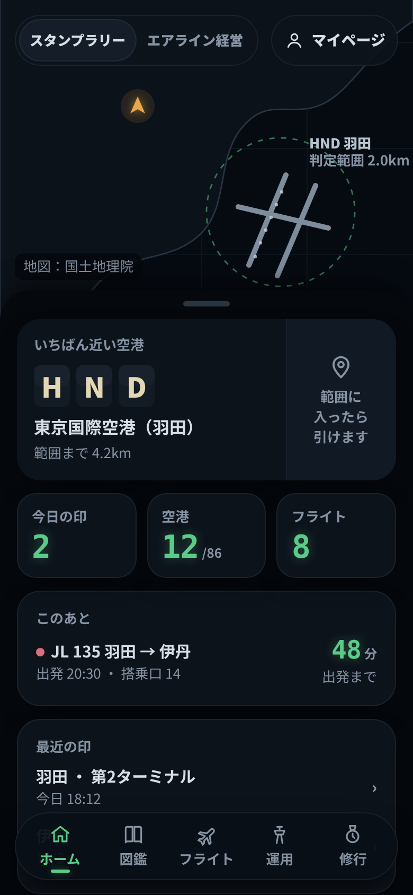
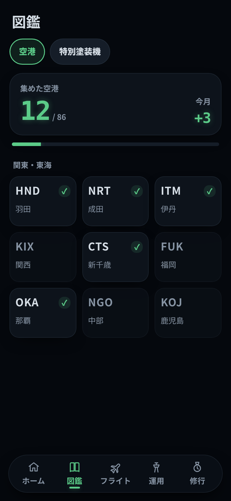
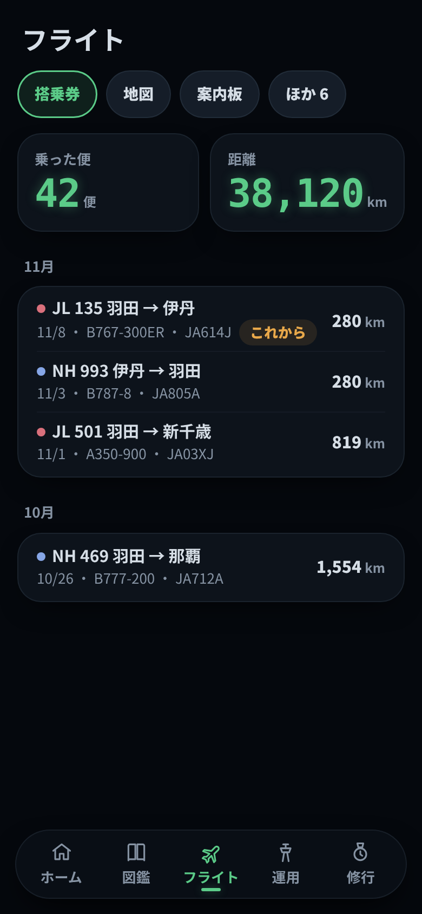
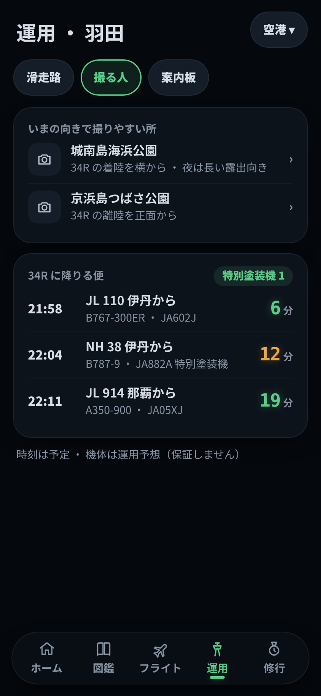
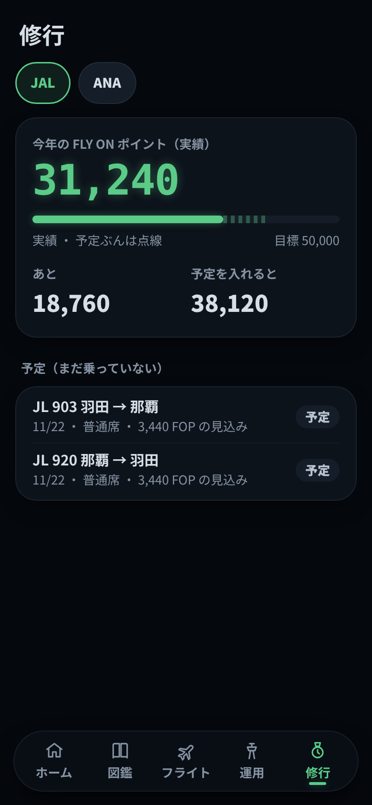
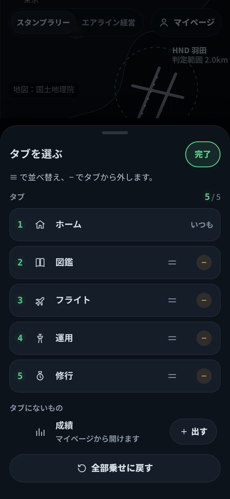
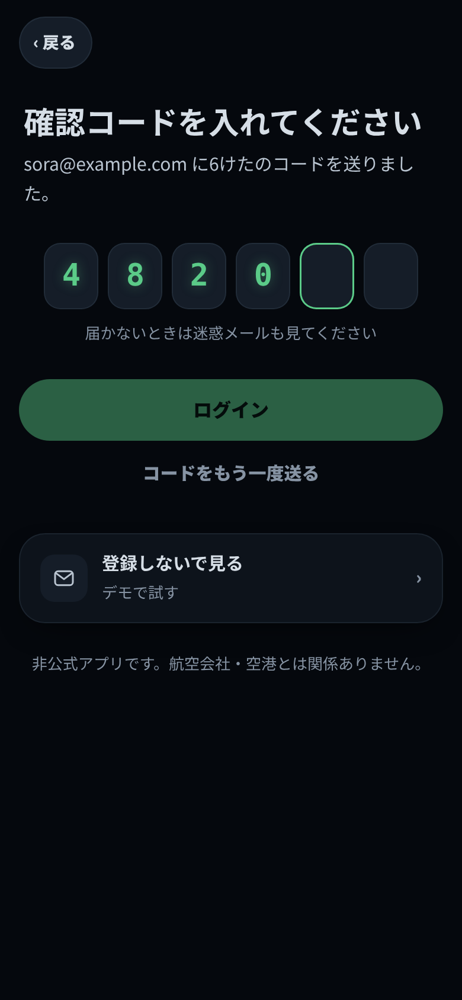
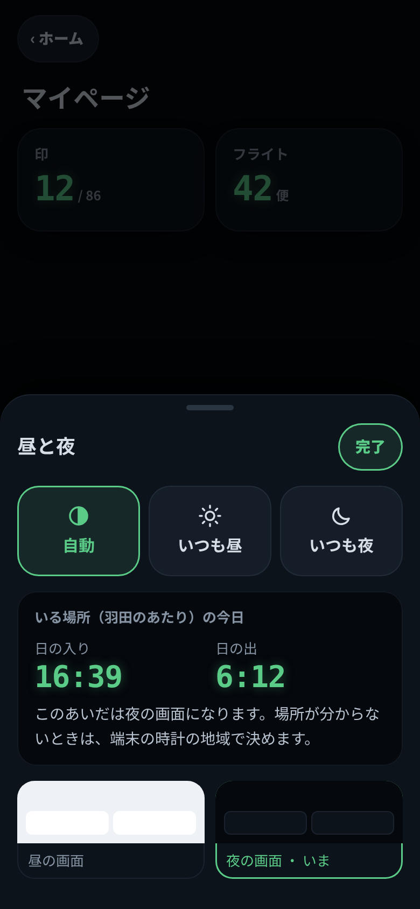
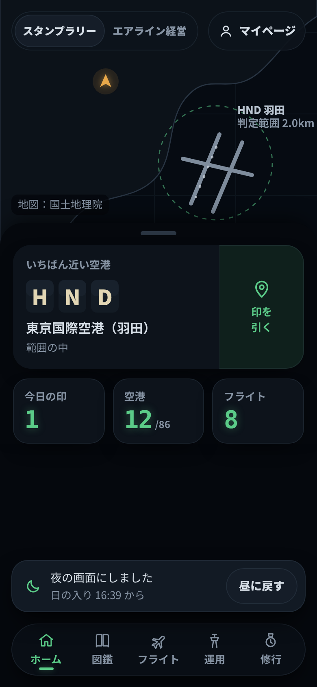

夜の画面（画面案・1版）
11/8 の本人の決定「案B 夜の操縦席を、夜だけのアプリ全体の見た目にする」の画面案。いる場所の日の入り〜日の出は自動で夜の画面、マイページで自動／いつも昼／いつも夜。1月の公開に入れる。
守ったこと
- 本文はふだんの書体。光る計器の字（等幅）は数字だけ。空港コード・滑走路の名前は光らせない
- 光る色は2色だけ：緑 #5BCB88＝計器の数字・選んでいるもの／琥珀 #E8A84A＝いまここ・注意・予想・特別塗装機
- 字と地の差は 4.5:1 以上。本文は真っ白にせず #B9C4D0、見出しは #D6DEE6（夜のデッキで目がくらまない明るさ）
- 外した決まりは「画面全体を黒にしない」だけ。角丸カード・ピル・黒い線なし・地図とシート・タイルはそのまま（案B の四角い枠と押しボタンは取らなかった）
- 出発案内板風に寄せない：ドット文字・パタパタは近い空港のコードだけ、琥珀を全面に使わない（今のアプリの「案内板」の配色とは別物）

01 ホーム
02 図鑑
03 フライト 04 運用（滑走路）
04 運用（滑走路）
04b 運用（撮る人の見方）
05 修行 06 マイページ
06 マイページ
07 タブを選ぶ
08 ログイン
09 昼と夜の切り替え
10 日の入りで切り替わったとき色の一覧（トークン）は tokens.md。チェックイン担当が今の色の変数に重ねて使える対応表つき。